<!doctype html>
<html lang='es'>
<head>
<meta charset='utf-8'>
<meta name='viewport' content='width=device-width,initial-scale=1'>
<title>Tema 4 Conservemos la Tierra</title>
<style>body{font-family:system-ui,-apple-system,Segoe UI,Roboto,Ubuntu,Cantarell,Noto Sans,sans-serif;line-height:1.5;max-width:980px;margin:24px auto;padding:0 16px;}
    h1,h2,h3{line-height:1.2}
    img{max-width:100%;height:auto}
    figure{margin:12px 0}
    figcaption{color:#666;font-size:0.9em;margin-top:6px}
    .callout{border:1px solid #ddd;border-left:6px solid #444;background:#f8f8f8;padding:12px 14px;margin:12px 0;border-radius:6px}
    .muted{color:#666;font-size:0.9em}
    hr{border:none;border-top:1px solid #eee;margin:18px 0}</style>
</head>
<body>
<h1>Tema 4 Conservemos la Tierra</h1>
<hr>
<p class='muted'>Página 280</p>
<h3>Tema 4 Conservemos la Tierra</h3>
<p>Unidad y diversidad</p>
<div class='callout'>
<p>Como hemos revisado en los temas anteriores, en la Tierra hay una gran</p>
<p>diversidad de formas de vida. Pero una de ellas, la humana, ha transformado</p>
<p>el planeta sin considerar que la existencia de la Tierra no se justifica por</p>
<p>la utilidad que ésta tiene para ella. La Tierra, hogar extraordinario, tiene</p>
<p>derecho a seguir existiendo y con ella todos sus habitantes.</p>
</div>
<p>en la Tierra ara empezar...</p>
<p>¿Qué te hace pensar y sentir la imagen?</p>
<figure>

</figure>
<p>Conservemos la salud de la madre Tierra.</p>
<p>279</p>
<hr>
<p class='muted'>Página 281</p>
<figure>
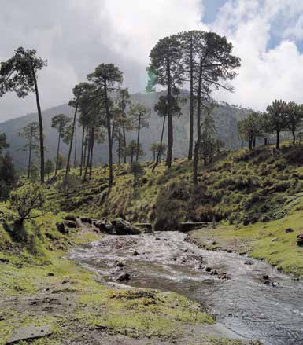
</figure>
<h2>H</h2>
<p>ace muchísimo tiempo, antes de nacer el primer ser hu-</p>
<p>Nuestro planeta, mano, antes de que el primer ár- la Tierra bol buscara la luz del Sol... su vida</p>
<p>comenzó. Con el paso de los años se ha transformado. Los ríos, como</p>
<p>sangre, corren por sus venas, ex- presa lo que siente, nos alimenta,</p>
<p>nos puede sanar, tiene el poder de regalarnos vida, energía y también</p>
<p>alegrías. No es una cosa, es la Tie- rra. Y hay razón para llamarla</p>
<p>Madre.</p>
<div class='callout'>
<p>Comenten el contenido del texto anterior y digan qué piensan de la</p>
<p>última frase.</p>
</div>
<p>¿Qué significa para ti querer y cuidar la Tierra?</p>
<p>         280</p>
<hr>
<p class='muted'>Página 282</p>
<div class='callout'>
<p>Comparte tu respuesta con otras personas del Círculo de estudio y</p>
<p>escribe en el cuaderno las ideas que consideres más importantes.</p>
</div>
<p>Unidad y diversidad en la Tierra</p>
<h3>Traza una ✓ en los círculos correspondientes a las acciones que apoyas</h3>
<h3>o realizas con frecuencia.</h3>
<div class='callout'>
<p>Respeto y no daño a las plantas y animales con los que convivo.</p>
<p>Mantengo encendida la luz sólo cuando la necesito.</p>
<p>En los lugares públicos, respeto las indicaciones que prohíben fumar y tirar</p>
<p>basura.</p>
<p>Separo el papel, las latas y el vidrio de otra basura y los vendo.</p>
<p>Cuando llueve, uso recipientes limpios para reunir agua y después la utilizo</p>
<p>para regar plantas y limpiar la casa.</p>
<p>Le enseño a los niños con los que convivo a mantener limpio el lugar</p>
<p>donde se encuentren, a no desperdiciar agua ni energía eléctrica.</p>
<p>Evito el uso de aerosoles.</p>
<p>Participo en actividades que organizan grupos o instituciones para</p>
<p>sembrar y cuidar árboles.</p>
<p>Uso jabones y detergentes que no contaminan mucho.</p>
</div>
<div class='callout'>
<p>Revisen sus respuestas y, por parejas, expliquen la importancia que</p>
<p>tiene difundir y llevar a cabo cada una de las medidas anteriores.</p>
<p>Escribe en tu cuaderno la conclusión a la llegaron.</p>
</div>
<p>281</p>
<hr>
<p class='muted'>Página 283</p>
<p>Trabajando por nuestra casa, la Tierra</p>
<p>Nuestro planeta,</p>
<p>Lee el siguiente texto.</p>
<p>la Tierra</p>
<div class='callout'>
<p>Para empezar bien el próximo año</p>
<p>A quienes aman la Tierra:</p>
<p>Cada día docenas de especies desaparecen de la Tierra para siempre. Pero</p>
<p>aún hay esperanzas, con la ayuda de muchas personas, la ballena gris se sigue</p>
<p>reproduciendo en aguas mexicanas, algunas industrias contaminantes han sido</p>
<p>sancionadas, y miles de kilómetros de zonas arboladas han sido protegidas</p>
<p>para siempre. Tenemos sólo una madre Tierra, necesita de nosotros. A diario, tú</p>
<p>puedes hacer algo por ella. ¿Qué vas a hacer?</p>
<p>¡Corre la voz!</p>
</div>
<div class='callout'>
<p>Investiga tres medidas que, a partir de hoy, podrías llevar a cabo</p>
<p>para conservar la Tierra. Puedes consultar a personas o materiales</p>
<p>impresos. Anótalas en tu cuaderno.</p>
</div>
<p>ara</p>
<p>Consulta en tu Revista el texto “ Qué podemos hacer para saber</p>
<p>conservar la Tierra?” más...</p>
<p>Revisa las medidas que investigaste. Después, selecciona algunas de ellas</p>
<p>y decide qué podrías hacer para darlas a conocer a tus familiares o</p>
<p>vecinos. Fíjate en los ejemplos de la siguiente página.</p>
<p>282</p>
<hr>
<p class='muted'>Página 284</p>
<p>Observa las ilustraciones.</p>
<p>Unidad y</p>
<figure>

</figure>
<p>diversidad en la Tierra</p>
<figure>

</figure>
<figure>

</figure>
<figure>

</figure>
<div class='callout'>
<p>Investiga las direcciones de algunas instituciones u organizaciones</p>
<p>dedicadas a la conservación del ambiente y acude a ellas para solici-</p>
<p>tar información acerca de las actividades que realizarás en tu familia</p>
<p>o en tu comunidad.</p>
</div>
<p>Realiza las actividades de la ficha “Reciclemos el papel”.</p>
<p>abías que...</p>
<p>Muchas personas se dedican a reciclar papel y realizan con él diversas artesanías,</p>
<p>por ejemplo, canastas de vistosos colores, separadores para libros con frases</p>
<p>283</p>
<hr>
<p class='muted'>Página 285</p>
<p>de autores famosos, libretas, agendas, calendarios, entre otras cosas. Esto</p>
<p>permite que se reutilice el papel, se proteja el ambiente, y algunas familias</p>
<p>Nuestro planeta, se apoyen económicamente vendiendo estos productos.</p>
<p>la Tierra</p>
<p>Lee y subraya las ideas principales de la siguiente noticia.</p>
<figure>

</figure>
<h3>Derecho de toda</h3>
<h3>persona a un ambiente</h3>
<h3>adecuado</h3>
<p>Integrado a rango constitucional que es impostergable una refor-</p>
<p>Ciudad de México, 5 de enero de 1999. Por unanimidad (con 417</p>
<p>ma a la Carta Magna que permita votos), el Pleno de la Cámara de</p>
<p>prever el derecho al medio am-</p>
<p>Diputados aprobó el Decreto por biente adecuado, lo cual dará sus-</p>
<p>el que se adiciona un párrafo quin- tento claro e incuestionable para</p>
<p>to al artículo 4º constitucional para su propia reglamentación.</p>
<p>establecer el derecho a un medio</p>
<p>En la discusión del tema, ambiente adecuado para el bien- se dijo que con estas medidas se</p>
<p>estar y desarrollo de la población, busca evitar las consecuencias</p>
<p>y se reforma el párrafo primero de la tala o quema inmoderada</p>
<p>del artículo 25 del mismo orde- de selvas, el comercio de especies</p>
<p>namiento, a efecto de incluir el raras amenazadas y en peligro</p>
<p>término “sustentable” en relación de extinción, la sobreexplotación</p>
<p>con la rectoría del desarrollo na- de los recursos, así como la con-</p>
<p>cional.</p>
<p>taminación atmosférica deriva-</p>
<p>En el dictamen, las comisiones da del consumo de combustibles</p>
<p>unidas de Gobernación y Puntos fósiles (petróleo), generadores de</p>
<p>Constitucionales y la de Ecología energía que amenazan gravemen-</p>
<p>y Medio Ambiente consideraron te la estabilidad de los ecosistemas.</p>
<p>284</p>
<hr>
<p class='muted'>Página 286</p>
<div class='callout'>
<p>Comenten acerca de la noticia anterior:</p>
<p>¿Qué relación encuentras entre esta noticia y los problemas</p>
<p>revisados en las actividades de esta unidad?</p>
<p>¿Cuál es la responsabilidad de cada persona para hacer realidad</p>
<p>esta propuesta?</p>
<p>Escribe en tu cuaderno una propuesta de carta dirigida a represen-</p>
<p>tantes locales o federales de la Cámara de Diputados para solicitarles</p>
<p>su apoyo en la elaboración de leyes que favorezcan la solución de uno</p>
<p>de los principales problemas de contaminación de tu comunidad, o</p>
<p>bien, de procedimientos que hagan cumplir las leyes que ya existen.</p>
</div>
<p>Unidad y diversidad en la Tierra</p>
<p>Revisen el texto de la carta que propone cada integrante. Después, entre</p>
<p>todos, redacten el texto de la carta que enviarán. Inviten a sus familiares</p>
<p>y vecinos para que firmen en apoyo a sus demandas y comenten la</p>
<p>importancia de llevar a cabo acciones para el cuidado del ambiente</p>
<figure>

</figure>
<p>ecordemos que...</p>
<p>Una persona sola poco puede hacer para evitar que miles de</p>
<p>litros de petróleo floten o ardan sobre la superficie de los ma-</p>
<p>res, contaminen el agua y destruyan la vida. Pero todos juntos,</p>
<p>a diario, podemos lograr que la producción y el consumo de</p>
<p>ese recurso sean más racionales, y también que los dirigentes</p>
<p>de las distintas naciones no antepongan intereses económicos y políticos al interés legítimo de millones de personas que</p>
<p>deseamos conservar la Tierra y las formas de vida que hay en</p>
<p>ella. Infórmate, manifiesta tus inquietudes y une tus esfuerzos</p>
<p>con otras personas interesadas en hacer escuchar sus voces.</p>
<p>285</p>
<hr>
<p class='muted'>Página 287</p>
<p>uestros avances</p>
<p>Nuestro planeta, la Tierra</p>
<ul>
<li>1. Elige dos o tres actividades que te hayan resultado difíciles de realizar;</li>
</ul>
<p>localiza aquellas partes que consideres necesario revisar nuevamente.</p>
<p>Anota el material, la página y el asunto que deseas revisar.</p>
<p>     </p>
<ul>
<li>2. Reúnete con otra persona, sea o no integrante del Círculo de estudio. Pla-</li>
</ul>
<p>tícale tus dificultades y juntos aclaren las dudas. De ser necesario, realicen</p>
<p>nuevamente la actividad.</p>
<p>Describe brevemente lo que hicieron y lo que aprendieron durante las</p>
<p>actividades realizadas.</p>
<p>      286</p>
<hr>
<p class='muted'>Página 288</p>
<ul>
<li>3. Elabora una síntesis del tema de esta unidad que te resultó más</li>
</ul>
<p>importante; explica por qué.</p>
<p>Unidad y diversidad el la Tierra         </p>
<ul>
<li>4. ¿Qué importancia tiene conocer las relaciones que existen entre los</li>
</ul>
<p>componentes de un ecosistema?</p>
<p>         287</p>
<hr>
<p class='muted'>Página 289</p>
<ul>
<li>5. Describe algunas ventajas en el uso de la observación y la</li>
</ul>
<p>Nuestro planeta, experimentación. Coméntalas con el grupo y escríbelas.</p>
<p>la Tierra        </p>
<ul>
<li>6. Recupera información de un periódico, libro, revista, radio o televisión,</li>
</ul>
<p>relacionada con problemas originados por la contaminación. Presenta</p>
<p>en el grupo la información y explica cómo afecta a los componentes</p>
<p>del ecosistema.</p>
<p>288</p>
<hr>
<p class='muted'>Página 290</p>
<p>¿Qué he aprendido y para qué me sirve?</p>
<p>Unidad y diversidad el la Tierra</p>
<p>Unidad 4. Unidad y diversidad en la Tierra</p>
<p>Temas:</p>
<ul>
<li>1. México, un país de contrastes</li>
<li>2. Los ecosistemas en el mundo</li>
<li>3. Cuidemos el patrimonio de la humanidad</li>
<li>4. Conservemos la Tierra</li>
</ul>
<p>¿Qué aprendí en esta unidad?</p>
<p>  </p>
<p>¿Qué debo repasar?</p>
<p>  </p>
<p>¿Para qué me sirve lo que he aprendido en esta unidad?</p>
<p>   289</p>
<hr>
<p class='muted'>Página 291</p>
<figure>
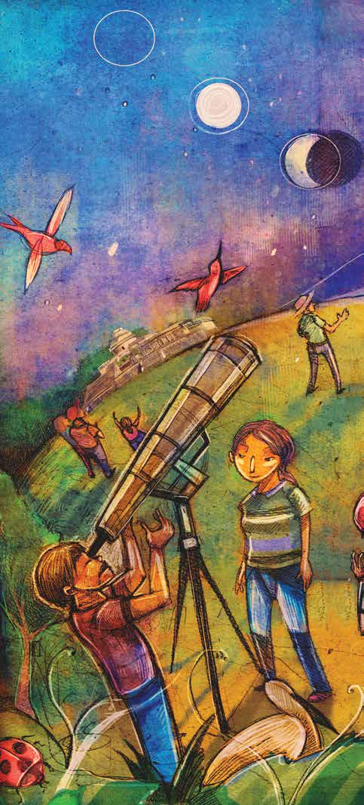
</figure>
<div class='callout'>
<p>¿QUÉ NOS</p>
<p>PROPONEMOS?</p>
<p>•	Distinguir las características</p>
<p>más importantes del universo,</p>
<p>del sistema solar y de la Tierra.</p>
<p>•	Identificar las formas en que la</p>
<p>Tierra cambia y evoluciona de</p>
<p>manera natural y por la acción</p>
<p>de los seres humanos.</p>
<p>•	Explicar las relaciones</p>
<p>que existen entre algunos</p>
<p>fenómenos naturales y el</p>
<p>movimiento de los cuerpos</p>
<p>u objetos que se encuentran</p>
<p>en el cielo.</p>
<p>•	Apreciar cómo nuestras ideas</p>
<p>sobre el universo han ido</p>
<p>cambiando con el tiempo.</p>
<p>TEMAS</p>
<p>1.	La Tierra, nuestra casa</p>
<p>en el universo</p>
<p>2.	Origen y evolución</p>
<p>de la vida</p>
<p>3.	Estaciones, eclipses</p>
<p>y mareas</p>
<p>4.	Nuestras ideas acerca del</p>
<p>mundo y la vida cambian</p>
<p>Nuestros avances</p>
<p>¿Qué he aprendido y para qué</p>
<p>me sirve?</p>
</div>
<hr>
<p class='muted'>Página 292</p>
<figure>
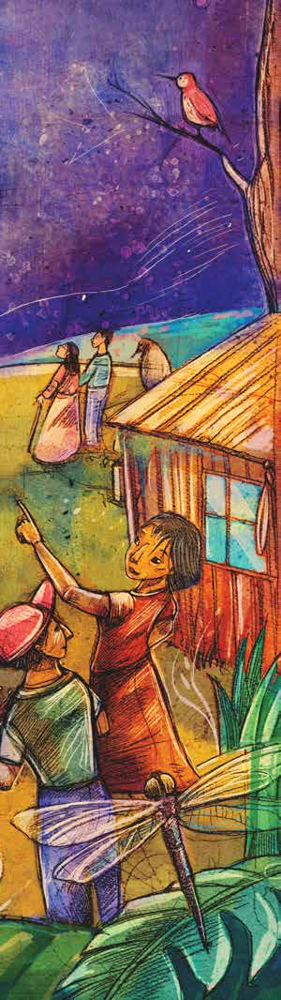
</figure>
<h2>Una mirada</h2>
<h2>al cielo</h2>
<h3>La Tierra, nuestro planeta, al igual que</h3>
<p>otros planetas y millones de estrellas, forma</p>
<p>Su historia y muchos parte del universo.</p>
<p>de los fenómenos que ocurren en ella tie- nen origen en los movimientos de los cuer-</p>
<p>Esto pos u objetos que existen en el cielo.</p>
<p>se sabe por el conocimiento que se tiene del universo, el cual ha ido cambiando a lo lar-</p>
<p>go de la historia de la humanidad.</p>
<hr>
<p class='muted'>Página 293</p>
<div class='callout'>
<p>1	 La Tierra, nuestra casa en el universo</p>
</div>
<p>Nuestro planeta,</p>
<p>Tema la Tierra</p>
<div class='callout'>
<p>Las características que tiene el interior y la superficie del planeta Tierra,</p>
<p>su atmósfera y su clima, combinadas con la energía del Sol, hacen posible</p>
<p>la existencia de diversas formas de vida. El estudio del universo nos ayuda</p>
<p>a comprender mejor el origen de nuestro planeta y de los seres vivos que</p>
<p>hay en él.</p>
</div>
<p>ara empezar...</p>
<p>Observa la ilustración y lee el texto siguiente.</p>
<figure>
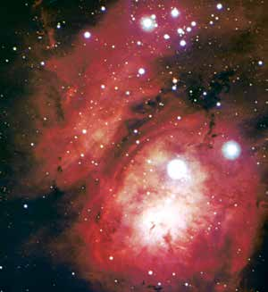
</figure>
<p>El universo</p>
<p>¿Qué es el universo?</p>
<p>pregunté cien veces, y siempre me contestaron</p>
<p>¡Todo lo que ves!</p>
<p>¿Qué sabes del universo?</p>
<p>292</p>
<hr>
<p class='muted'>Página 294</p>
<div class='callout'>
<p>Compara tus respuestas con las de otros integrantes del Círculo de</p>
<p>estudio.</p>
</div>
<p>Una mirada al cielo</p>
<p>El origen del universo</p>
<p>En el transcurso del tiempo, diferentes culturas de la antigüedad han</p>
<p>tratado de contestar cómo surgió el universo. Para hacerlo, muchos se</p>
<p>basaron en historias mágicas, leyendas religiosas y suposiciones filosóficas.</p>
<p>Algunas explicaciones de diferentes culturas sobre el origen del universo</p>
<h2>S</h2>
<p>egún los aztecas, el mundo actual fue creado luego de cuatro intentos</p>
<p>fallidos de los dioses, quienes trataron de formar un hombre bueno que</p>
<p>les rindiera honor y tributo. Esta era corresponde al Quinto Sol, en donde</p>
<p>los aztecas se consideran a sí mismos el pueblo elegido para mantener al</p>
<p>astro rey con vida.</p>
<p>Los egipcios, por su parte, pensaban que antes de todo lo único que había</p>
<p>era un océano turbulento, oscuro e infinito, que no era posible ordenar. En</p>
<p>Cultura egipcia</p>
<figure>
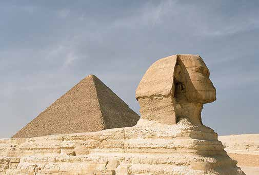
</figure>
<figure>

</figure>
<p>Pirámides. Przemyslaw “Blueshade” Idzkiewicz. Este archivo está autorizado bajo la</p>
<p>293</p>
<hr>
<p class='muted'>Página 295</p>
<p>ese caos vivía Nun o Amón, quien luego de un tiempo tomó conciencia de</p>
<p>sí mismo y generó todo lo existente, hasta transformarse en Sol. Fue entonces</p>
<p>Nuestro planeta,</p>
<p>que se convirtió en Ra, el gran dios solar, padre de todos los dioses.</p>
<p>la Tierra</p>
<p>En la India, varias religiones coinciden al explicar el origen del universo</p>
<p>como un continuo: al igual que la vida y la muerte, el cosmos está en un</p>
<p>continuo renacer, en donde la muerte es una etapa transitoria, porque el</p>
<p>ciclo de vida se repite, así sea en diferentes manifestaciones. Desde hace</p>
<p>millones de años, un dios crea el universo durante el día, pero por la noche</p>
<p>Cultura el caos regresa, lo que hace necesaria la regeneración.</p>
<p>griega</p>
<p>Los griegos y romanos creían</p>
<div class='callout'>
<p>Partenón. Marco ed Emanuela. Septiembre 2005. Este archivo está autorizado bajo la</p>
</div>
<figure>
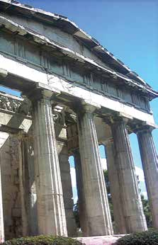
</figure>
<figure>
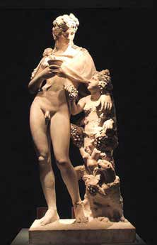
</figure>
<p>que en el principio predominaba el</p>
<p>Caos, del que surgieron Erebo (las tinieblas) y Nicte (la noche), quie-</p>
<p>nes originaron a Eros (el amor),</p>
<p>Éter (la luz) y Hemera (el día). Éter y Hemera se unieron y procrearon</p>
<p>a Gea, la Tierra, quien sería ma- dre de Urano y Ponto (el cielo y</p>
<p>el mar, respectivamente). Todas estas deidades generarían muchas</p>
<p>más que tuvieron en el Olimpo, su morada.</p>
<div class='callout'>
<p>Comenta con otros compañeros del Círculo de estudio o tu asesor lo</p>
<p>que acabas de leer.</p>
<p>Investiga o comenta una creencia de otra cultura americana-prehispá-</p>
<p>nica distinta a las del texto (mayas, incas u otra que te interese) sobre</p>
<p>el origen del universo, y anota lo más importante en tu cuaderno.</p>
<p>Comenta los resultados de tu investigación con los de tus compañe-</p>
<p>ros. Pide apoyo a tu asesor para que te oriente dónde investigar.</p>
</div>
<p>294</p>
<hr>
<p class='muted'>Página 296</p>
<p>Debemos tomar en cuenta que ninguna de estas explicaciones se ha</p>
<p>comprobado basándose en algún razonamiento o método científico. Todas</p>
<p>Una mirada al cielo se sustentan en la fe de las creencias de cada cultura.</p>
<p>¿Qué forma parte del universo?</p>
<p>Observa el siguiente esquema.</p>
<figure>

</figure>
<p>En el universo hay</p>
<p>También hay</p>
<p>Las estrellas forman grupos enormes llamados galaxias, nebulosas, que</p>
<p>más estrellas que que se encuentran girando son nubes de gas cualquier otro tipo de</p>
<p>en forma permanente.</p>
<p>y polvo.</p>
<p>objetos. Las estrellas</p>
<p>Se localizan son esferas de gas también los incandescente.</p>
<p>meteoritos, fragmentos de roca y de metal</p>
<p>Los asteroides en el espacio.</p>
<p>son millones de pedazos de</p>
<p>En su mayor roca.</p>
<p>parte, el universo no contiene más que espacio</p>
<p>Los cometas vacío.</p>
<p>son bolas de polvo, gas y hielo</p>
<p>Nosotros acumulados.</p>
<p>pertenecemos a una galaxia llamada Vía</p>
<p>Láctea. Todas</p>
<p>El sistema solar es el conjunto formado por</p>
<p>El Sol es una estrella las estrellas que el Sol y todos los objetos que giran a su</p>
<p>entre millones de la vemos forman alrededor, como los planetas, que son bolas de</p>
<p>galaxia; es el centro parte de ella.</p>
<p>roca, hielo o gas que giran sobre su propio eje, del sistema solar.</p>
<p>y sus satélites, formados de rocas.</p>
<p>295</p>
<hr>
<p class='muted'>Página 297</p>
<p>¿Qué importancia tiene para los seres humanos saber que, hasta ahora,</p>
<p>la Tierra es el único planeta en el que existe vida?</p>
<p>Nuestro planeta, la Tierra     </p>
<p>¿Sabes cuáles son los cuerpos celestes* que forman el sistema solar?</p>
<p>Sí       No</p>
<p>Si contestaste afirmativamente escríbelos.</p>
<p>    </p>
<div class='callout'>
<p>Intercambien y comenten sus respuestas y traten de llegar a una</p>
<p>conclusión para cada pregunta. Anótalas en tu cuaderno.</p>
</div>
<p>ara</p>
<p>Consulta en tu Revista el texto “ Cómo es el universo?” saber</p>
<p>más...</p>
<p>*Cuerpos celestes: Objetos que se localizan en el cielo.</p>
<p>296</p>
<hr>
<p class='muted'>Página 298</p>
<p>¿Cómo se formó el universo y sus componentes?</p>
<p>Una mirada al cielo</p>
<p>¿Tienes alguna información acerca de cómo se formó el universo? Anótala.</p>
<p>  </p>
<p>Observa la siguiente ilustración.</p>
<figure>

</figure>
<p>Hace 15 000 millones</p>
<p>La vida surgió en de años, el universo la Tierra hace empezó con una</p>
<p>3 500 millones tremenda explosión de años, con la que se creó</p>
<p>aproximadamente.</p>
<p>toda la materia, la energía, el espacio y el tiempo.</p>
<p>La Tierra se formó también hace 4 600 millones</p>
<p>En unos minutos de años.</p>
<p>se formó la materia</p>
<p>NASA and The Hubble Heritage Team (STScI/AURA), Wikimedia Commons.</p>
<p>que compone el universo.</p>
<p>La galaxia de la Vía</p>
<p>Hace 4 600 millones de años se formó el sistema</p>
<p>Láctea se formó hace solar a partir de una nube de gas y polvo.</p>
<p>13 000 millones de</p>
<p>Primero se formó el Sol y luego los demás años.</p>
<p>cuerpos: planetas, asteroides, satélites.</p>
<p>297</p>
<hr>
<p class='muted'>Página 299</p>
<div class='callout'>
<p>Comenta con tus compañeros del Círculo de estudio lo que observan</p>
<p>en la fotografía anterior.</p>
<p>Con la colaboración de otras personas, responde la siguiente pregunta.</p>
</div>
<p>Nuestro planeta, la Tierra</p>
<p>Si una persona viviera 100 años, ¿cuántas personas de la misma edad</p>
<p>tendrían que sumarse para igualar el total de años que tiene la Tierra?</p>
<p></p>
<div class='callout'>
<p>Elaboren un periódico mural que lleve por título</p>
<p>“El universo y la vida”.</p>
</div>
<p>Consulta a personas ajenas al Círculo de estudio o lee algunos materiales</p>
<p>para obtener la información que requieras.</p>
<figure>
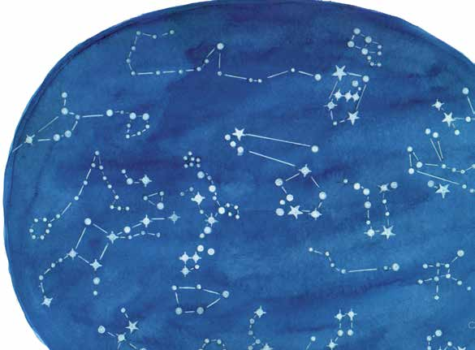
</figure>
<p>Las estrellas</p>
<p>Observa la siguiente imagen.</p>
<p>298</p>
<hr>
<p class='muted'>Página 300</p>
<p>¿Conoces el nombre de algunas estrellas? Escríbelos.</p>
<p>Una mirada  al cielo  </p>
<div class='callout'>
<p>M45 - The Pleiades, D JMcCrady, Fotopedia.</p>
</div>
<p>Las estrellas tienen diversas características:</p>
<figure>

</figure>
<ul>
<li>Se localizan a grandes distancias de la Tierra.</li>
<li>Se forman de gas y polvo.</li>
<li>Crecen, se desarrollan y mueren; pueden</li>
</ul>
<p>durar cientos o millones de años.</p>
<ul>
<li>Tienen diversas temperaturas.</li>
<li>Producen energía luminosa que las hace</li>
</ul>
<p>brillar.</p>
<ul>
<li>Mueren o se extinguen de diferentes maneras:</li>
</ul>
<p>explotan o se extinguen poco a poco.</p>
<p>Una estrella es una bola de gas caliente y luminoso en permanente actividad. La mayoría</p>
<p>de las estrellas contienen dos gases principales:</p>
<p>hidrógeno y helio. Las reacciones que ocurren en su núcleo, es decir, en su centro, producen energía.</p>
<p>La energía es liberada en forma de luz y calor.</p>
<p>¿Encuentras algún parecido entre la vida de una estrella y la de una</p>
<p>persona? Anótalo.</p>
<p>   299</p>
<hr>
<p class='muted'>Página 301</p>
<p>¿Por qué crees que los seres humanos nos hemos fijado en las estrellas?</p>
<p>Nuestro  planeta, la Tierra  </p>
<p>El ser humano, desde tiempos remo-</p>
<figure>

</figure>
<p>tos, se ha fijado en las estrellas, las ha estudiado. Por su posición y brillo,</p>
<p>las estrellas en la noche parecieran formar figuras. A estas figuras se les</p>
<p>llama constelaciones. Cada una de las constelaciones, para quienes las</p>
<p>NASA-JPL/California Institute of Technology, Wikimedia Commons.</p>
<p>miraron, representaba a una perso- na, animal u objeto. El brillo de una</p>
<p>estrella depende de su luminosidad y de su distancia con la Tierra.</p>
<p>¿Qué pasaría con la Tierra y los demás planetas, si el Sol se extinguiera?</p>
<p>Descríbelo.</p>
<p>  </p>
<div class='callout'>
<p>Revisen y comenten sus respuestas.</p>
</div>
<p>300</p>
<hr>
<p class='muted'>Página 302</p>
<figure>

</figure>
<p>abías que...</p>
<p>Una mirada al cielo</p>
<div class='callout'>
<p>Algunas aves, como las currucas y las grullas,</p>
<p>y algunos insectos, como las hormigas y</p>
<p>las mariposas nocturnas, se orientan por la</p>
<p>posición de los astros y las estrellas para seguir el</p>
<p>camino a casa.</p>
</div>
<figure>

</figure>
<figure>

</figure>
<figure>
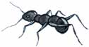
</figure>
<p>El Sol es una estrella. La energía que se produce en su núcleo alcanza</p>
<p>la superficie y se propaga al espacio. La luz visible y otras radiaciones</p>
<p>tardan ocho minutos en llegar a la Tierra desde la superficie solar. Como</p>
<p>todas las estrellas, el Sol algún día se extinguirá, cuando esto ocurra</p>
<p>habrán pasado miles de millones de años.</p>
<p>¿Qué pasaría en la Tierra si el Sol tuviera cinco veces más su diámetro actual?</p>
<p>  </p>
<div class='callout'>
<p>Algunos datos que conocemos del Sol</p>
</div>
<div class='callout'>
<p>Edad</p>
<p>Diámetro</p>
<p>Temperatura del centro</p>
<p>Distancia de la Tierra</p>
</div>
<div class='callout'>
<p>4 600 millones de años aproximadamente</p>
</div>
<p>301</p>
<hr>
<p class='muted'>Página 303</p>
<p>Algunas estrellas como el Sol dan origen a planetas que giran a su</p>
<p>alrededor. Así nació el sistema solar al que pertenecemos. Primero, se</p>
<p>Nuestro planeta,</p>
<p>formó el Sol; después, los planetas, los satélites, los asteroides y cometas</p>
<p>la Tierra que giran a su alrededor.</p>
<p>Observa el siguiente esquema.</p>
<figure>

</figure>
<p>El Sol es sólo una estrella entre las</p>
<p>La Tierra es el tercero de los planetas.</p>
<p>miles de millones que existen en el</p>
<p>Es el único planeta del sistema solar universo. El Sol, junto con los ocho</p>
<p>en el que se sabe que existe vida. En planetas, más de 60 satélites y miles</p>
<p>la Tierra viven más de 6 000 millones de asteroides y cometas, forman el</p>
<p>de personas y cientos de miles de sistema solar.</p>
<p>organismos vivos.</p>
<p>Los planetas giran alrededor del Sol y sobre su propio eje.</p>
<p>También alrededor del Sol giran en</p>
<p>Los planetas que giran alrededor del Sol órbita los cometas, asteroides y</p>
<p>son 8: Mercurio, Venus, Tierra, Marte, meteoritos.</p>
<p>Júpiter, Saturno, Urano y Neptuno.*</p>
<p>Cuatro planetas son de roca: Mercurio,</p>
<p>Venus, Tierra y Marte; y cuatro están formados por gas licuado: Júpiter,</p>
<p>Saturno, Urano y Neptuno.</p>
<p>*	A partir de 2006, Plutón es considerado como planeta enano, según la Unión</p>
<p>Astronómica Internacional (uai).</p>
<p>302</p>
<hr>
<p class='muted'>Página 304</p>
<p>Alrededor de cada planeta giran satélites, que son formaciones rocosas.</p>
<p>Algunos planetas tienen uno, otros más de uno. La Luna es el satélite</p>
<p>Una mirada al cielo</p>
<figure>

</figure>
<p>natural del planeta Tierra.</p>
<p>El sistema solar</p>
<p>Al ritmo de un sabroso danzón se pusieron a bailar más de sesenta lunas,</p>
<p>los planetas y el Sol.</p>
<p>Reflexiona acerca de lo que significa la frase anterior. ¿Qué imaginas que hace girar a los</p>
<p>planetas y las lunas en torno al Sol?</p>
<div class='callout'>
<p>Escribe tus respuestas en tu cuaderno.</p>
<p>Discute con otros integrantes y den respuesta a las siguientes pre-</p>
<p>guntas:</p>
<p>¿Qué cae más rápido, un trozo de metal o una pluma de ave?</p>
<p>¿Por qué caen los objetos al suelo?</p>
<p>Anota tus respuestas en tu cuaderno.</p>
</div>
<p>Planeta. Significa, en griego, errante o caminante. Son cuerpos celestes,</p>
<p>es decir, objetos que se localizan en el cielo, de más de 1 000 kilómetros</p>
<p>de diámetro. No radian luz propia. Los planetas orbitan, es decir, giran</p>
<p>alrededor de las estrellas.</p>
<p>303</p>
<hr>
<p class='muted'>Página 305</p>
<p>ara saber</p>
<p>Consulta en tu Revista el texto “La fuerza en el universo”.</p>
<p>Nuestro más...</p>
<p>planeta, la Tierra</p>
<p>Existe una fuerza mediante la cual todos los componentes del universo se</p>
<p>atraen. Por ejemplo, los planetas y el Sol se atraen. Esa fuerza depende</p>
<p>de la masa de cada componente, es decir, de la cantidad de materia que</p>
<p>contiene. La fuerza de atracción es mayor mientras más grande y pesado</p>
<p>es un cuerpo celeste y mientras más cerca está de otro cuerpo.</p>
<p>A esta fuerza se le llama fuerza de gravedad.</p>
<p>¿Crees que exista vida en otro planeta?</p>
<p>Sí</p>
<p>No</p>
<p>¿Por qué?</p>
<p>  </p>
<div class='callout'>
<p>Escribe tu respuesta.</p>
</div>
<p>Imagina que vas a describir la Tierra a los habitantes de otro planeta.</p>
<p>Escribe tu descripción     304</p>
<hr>
<p class='muted'>Página 306</p>
<p>Algunos de los principales componentes de la Tierra</p>
<p>Una mirada al cielo</p>
<ul>
<li>1. Atmósfera. Capa de gases que rodean a la Tierra. Antes de que llegue</li>
</ul>
<p>a la superficie de la Tierra, la energía del Sol es recibida en la atmósfera.</p>
<p>Casi la mitad de esa energía es absorbida por la atmósfera y el resto</p>
<p>es devuelta al espacio.</p>
<ul>
<li>2. Corteza. Capa de la superficie del planeta. El grosor de la corteza</li>
</ul>
<p>terrestre varía según las diferentes partes del mundo; en algunos</p>
<p>lugares tiene entre 50 y 100 km, mientras que en otros apenas existe</p>
<p>corteza. Existen porciones de la corteza llamadas placas tectónicas</p>
<p>que están en constante movimiento.</p>
<ul>
<li>3. Océanos. Grandes masas de agua salada que cubren más de 70%</li>
</ul>
<p>de la corteza de la Tierra.</p>
<ul>
<li>4. Núcleo. Centro de la Tierra; se encuentra en estado sólido, formado en</li>
</ul>
<p>su mayor parte por hierro.</p>
<figure>

</figure>
<div class='callout'>
<p>Anota en el esquema el número</p>
<p>correspondiente a algunos de</p>
<p>los componentes principales</p>
<p>de la Tierra, de acuerdo con</p>
<p>las definiciones anteriores.</p>
</div>
<p>305</p>
<hr>
<p class='muted'>Página 307</p>
<div class='callout'>
<p>Respondan las siguientes preguntas. Para ello lean y discutan las</p>
<p>definiciones anteriores.</p>
</div>
<p>Nuestro planeta, la Tierra</p>
<p>¿Qué crees que pasaría si no hubiera atmósfera?</p>
<p>  </p>
<p>¿Qué puede suceder en la superficie de la Tierra como consecuencia</p>
<p>de los movimientos constantes de las placas tectónicas que forman la</p>
<p>corteza terrestre?</p>
<p>   ara saber</p>
<p>Consulta en tu Revista el texto “La Tierra”.</p>
<p>más...</p>
<div class='callout'>
<p>Algunos datos que conocemos de la Tierra</p>
</div>
<div class='callout'>
<p>Edad</p>
<p>Diámetro</p>
<p>Primera evidencia de vida</p>
<p>Número de especies vivientes</p>
</div>
<div class='callout'>
<p>4 600 millones de años aproximadamente</p>
<p>Hace 3 500 millones de años</p>
<p>Al menos 10 millones</p>
</div>
<p>306</p>
<hr>
<p class='muted'>Página 308</p>
<p>El día y la noche</p>
<p>Una mirada al cielo</p>
<p>La Tierra siempre tiene dos caras: una de tez sombría, la otra de luz clara;</p>
<p>una de piel cálida, la otra algo más fría.</p>
<div class='callout'>
<p>Intercambien ideas y en grupo respondan las siguientes preguntas.</p>
<p>¿Por qué hay día y noche?</p>
<p>¿Qué objetos o cuerpos celestes se observan durante el día y cuáles</p>
<p>durante la noche?</p>
<p>Anota las respuestas en tu cuaderno y revisa con otros integrantes</p>
<p>del Círculo de estudio las respuestas.</p>
</div>
<figure>

</figure>
<p>La Luna</p>
<p>A la Luna le han escrito los poetas, los que aman...</p>
<p>La Luna es el satélite de la Tierra...</p>
<p>La Luna es el único lugar extraterrestre en el que han caminado los seres humanos...</p>
<p>307</p>
<hr>
<p class='muted'>Página 309</p>
<p>¿Qué más sabes sobre la Luna?</p>
<p>Nuestro  planeta, la Tierra   </p>
<figure>
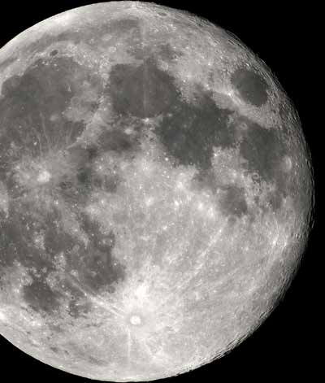
</figure>
<p>La Luna es el único satélite que tiene la Tierra.</p>
<p>Tiene menor masa que el planeta Tierra y un tamaño cercano a la cuarta parte de éste.</p>
<p>En la Luna no hay aire, ni agua, ni vida.</p>
<p>La Luna no tiene movimiento libre por el espacio, pues la atracción que la</p>
<p>Tierra ejerce sobre ella hace que ésta orbite alrededor de nuestro planeta.</p>
<p>El tiempo de rotación de la Luna alrededor de la Tierra es de 27.3 días.</p>
<p>El primer hombre que pisó la Luna fue el astronauta estadounidense Neil</p>
<p>Armstrong, el 21 de julio de 1969.</p>
<p>En la superficie de la Luna se observa infinidad, de cráteres. Éstos son huellas de miles de meteoritos,</p>
<p>formados de hierro y piedra, que han bombardeado la Luna</p>
<p>desde hace millones de años. En la Tierra cada día penetran polvo y</p>
<p>fragmentos de roca que se incendian al hacer fricción con el aire. Más de</p>
<p>90% de los meteoritos que llegan a la Tierra son piedras.</p>
<p>El mayor meteorito conocido en el mundo se localiza en África del Sur;</p>
<p>cayó hace miles de años. Su peso se estima en 60 toneladas.</p>
<p>308</p>
<hr>
<p class='muted'>Página 310</p>
<div class='callout'>
<p>Comenta con tus compañeros.</p>
<p>¿Desde cuándo los seres humanos observan el cielo?</p>
<p>¿Qué resultados se han obtenido de esas observaciones?</p>
</div>
<p>Una mirada al cielo</p>
<p>Lee el siguiente texto.</p>
<figure>
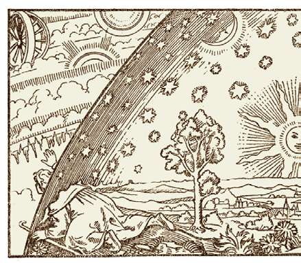
</figure>
<p>Astronomía y astrología,</p>
<p>¿son lo mismo?</p>
<p>Debido a que la astrología y la astronomía tienen que ver con el</p>
<p>universo, a menudo han sido objeto de confusión.</p>
<p>La astronomía estudia de manera científica el universo, mientras que</p>
<p>la astrología pretende adivinar el futuro mediante la observación de</p>
<p>los astros.</p>
<p>A medida que la humanidad ha</p>
<p>avanzado en conocimiento y entendido mejor su realidad, la astrología</p>
<p>ha quedado relegada.</p>
<p>Sin disminuir la importancia histórica que ha tenido en la historia del</p>
<p>hombre, hoy se considera una corriente espiritual o mística. Por ejemplo, en</p>
<p>algunas revistas o periódicos hay una sección dedicada a los horóscopos en ésta,</p>
<p>los astrólogos predicen el comportamiento de las personas, futuros sucesos y</p>
<p>hasta su destino, basándose en que todo lo que sucede en su vida está escrito</p>
<p>en las estrellas y su relación con los planetas.</p>
<p>La astronomía, en cambio, se dedica al estudio científico de los cuerpos</p>
<p>del espacio. Puede decirse que esta rama de la ciencia nació con las</p>
<p>309</p>
<hr>
<p class='muted'>Página 311</p>
<p>observaciones de los primeros pobladores de la Tierra. Los conocimientos y</p>
<p>explicaciones sobre el universo, así como los instrumentos para estudiarlo,</p>
<p>Nuestro planeta,</p>
<p>han ido avanzando gracias al desarrollo tanto de la ciencia como de las nuevas</p>
<p>la Tierra</p>
<p>tecnologías. Actualmente podemos observar el firmamento como nuestros</p>
<p>antepasados jamás se hubieran imaginado.</p>
<figure>
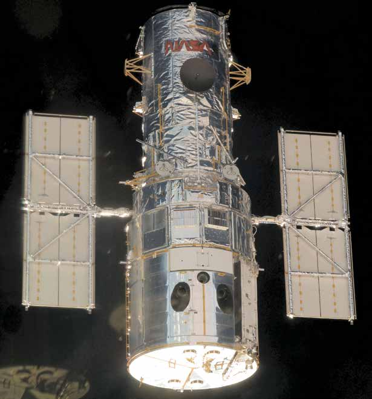
</figure>
<p>Cambiar por</p>
<p>Telescopio Hubble</p>
<p>NASA, Wikimedia Commons.</p>
<p>¿Qué instrumentos, máquinas y aparatos se usan en la exploración del</p>
<p>espacio? Investiga preguntando a otras personas y anota sus respuestas</p>
<p>en tu cuaderno.</p>
<p>310</p>
<hr>
<p class='muted'>Página 312</p>
<p>ecordemos que...</p>
<p>Una mirada al cielo</p>
<p>Todo lo que vemos a nuestro alrededor forma parte del universo. La historia</p>
<p>del universo explica, a su vez, la historia del Sol, de nuestro planeta, de la</p>
<p>Luna y los demás planetas que conocemos. El universo se encuentra en</p>
<p>movimiento y esto se refleja en el comportamiento de los objetos del cielo</p>
<p>o cuerpos celestes y en muchos de los fenómenos que ocurren en la Tierra.</p>
<p>Los conocimientos que los seres humanos hemos alcanzado del universo nos</p>
<p>permiten darnos cuenta de que muchos fenómenos terrestres están ligados</p>
<p>a lo que ocurre en el resto del universo.</p>
<figure>
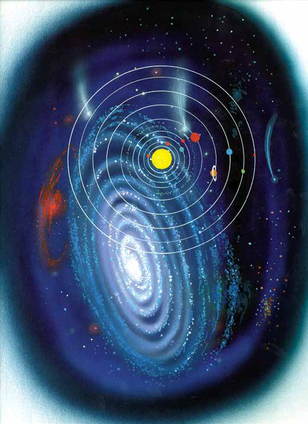
</figure>
<p>Vía Láctea.</p>
<p>311</p>
<hr>
<p class='muted'>Página 313</p>
<p>Tema	 2	 Origen y evolución de la vida</p>
<p>Nuestro planeta,</p>
<div class='callout'>
<p>Desde las épocas más antiguas, los seres humanos nos hemos hecho</p>
<p>infinidad de preguntas acerca de nuestro origen: ¿De dónde venimos?</p>
<p>¿Desde cuándo estamos en la Tierra? ¿Cuándo y cómo apareció la vida?</p>
<p>Las respuestas a estas y otras interrogantes las podemos encontrar mediante</p>
<p>el estudio de la formación y transformación de la Tierra.</p>
</div>
<p>la Tierra</p>
<figure>

</figure>
<p>NASA Blue Marble, NASA Goddard Photo and Video, Fotopedia.</p>
<p>ara empezar...</p>
<p>Explica con tus palabras cómo crees que se originó la vida en el planeta.</p>
<p>    312</p>
<hr>
<p class='muted'>Página 314</p>
<figure>

</figure>
<p>Lee el siguiente texto.</p>
<p>Una mirada al cielo</p>
<h2>L</h2>
<p>os organismos vivos podían ser engendrados no sólo por seres de su misma especie,</p>
<p>sino también por plantas o por materia sin vida. Así, en China</p>
<p>estaban convencidos de que algunos insectos, como los pulgones, nacían</p>
<p>espontáneamente de la planta de bambú si se sembraban brotes de esta</p>
<p>planta en tiempo cálido y húmedo. En Egipto se creía también que sapos,</p>
<p>ranas, serpientes, cocodrilos y ratas se formaban de limo del río Nilo. En el</p>
<p>Ramayana, libro sagrado de la India, se describe el nacimiento espontáneo</p>
<p>de moscas y parásitos a partir de la basura. En Grecia, pensaban que plantas</p>
<p>y animales se formaban de materia en descomposición, los seres humanos</p>
<p>mismos procederían de gusanos generados espontáneamente.</p>
<p>En la Antigüedad, tanto en Europa como en Asia, esta forma de explicarse</p>
<p>el origen de la vida se mantuvo durante cientos de años, hasta después</p>
<p>de 1860.</p>
<p>¿Por qué crees que llegaron a pensar de esta manera las personas de</p>
<p>esa época?</p>
<p>Lee las siguientes respuestas y señala con ✓ la que consideres correcta:</p>
<ul>
<li>1. Eran interpretaciones parciales y, por tanto, erróneas de lo que</li>
</ul>
<p>(   ) observaban cuando los restos de algún organismo entraba en</p>
<p>estado de descomposición.</p>
<ul>
<li>2. Porque las personas de esa época no se preocupaban por</li>
</ul>
<p>(   ) investigar y comprobar sus ideas y suposiciones.</p>
<ul>
<li>3. Porque así ocurrió en los inicios del mundo.</li>
</ul>
<p>(   ) 313</p>
<hr>
<p class='muted'>Página 315</p>
<div class='callout'>
<p>Intercambia y comenta tus respuestas con otros integrantes del Círcu-</p>
<p>lo de estudio.</p>
</div>
<p>Nuestro planeta, la Tierra</p>
<figure>
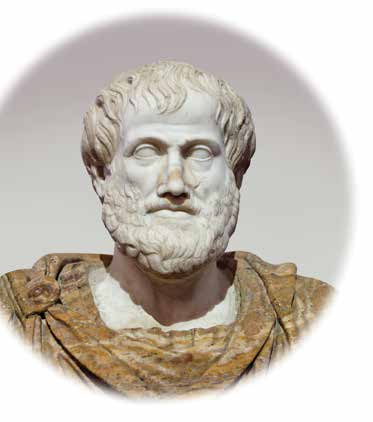
</figure>
<h2>A</h2>
<div class='callout'>
<p>Jastrow 2006, Wikimedia Commons.</p>
<p>Aristóteles</p>
</div>
<p>sí son los hechos: todo ser viene a la vida no sólo a partir del acoplamiento de los animales,</p>
<p>sino también a partir de la descomposición de la tierra y del estiércol.</p>
<p>Aristóteles, filósofo griego.</p>
<p>Lee las siguientes explicaciones sobre el origen de la vida.</p>
<ul>
<li>1. Las explicaciones religiosas —por ejemplo</li>
</ul>
<p>las de la Biblia— transmiten la idea de que existe un ser divino que creó el universo y al ser humano;</p>
<p>para esto se recurre a narraciones que corresponden</p>
<p>a la cultura del momento en que se escribió esta obra; en ella se</p>
<p>narra que Dios creó al hombre del barro y luego sopló sobre él para</p>
<p>infundirle vida. Después, el hombre fue sumido en un sueño profundo</p>
<p>por Dios, éste le extrajo una costilla, y de ella formó a la primera</p>
<p>mujer. De esta pareja, la primera en el mundo, surgieron todos los</p>
<p>seres humanos.</p>
<ul>
<li>2. Los mexicas, en la época prehispánica, establecieron cinco épocas</li>
</ul>
<p>religiosas regidas, cada una, por un Sol distinto. En las épocas corres-</p>
<p>pondientes a los cuatro soles anteriores a la actual (Quinto sol),</p>
<p>todos los seres fueron destruidos por diferentes catástrofes. Los dioses,</p>
<p>entonces, decidieron formar la época del Quinto sol, en la que se creó</p>
<p>el Sol y la Luna. Los hombres fueron creados de los huesos de otros</p>
<p>hombres mezclándolos con sangre y maíz.</p>
<p>314</p>
<hr>
<p class='muted'>Página 316</p>
<div class='callout'>
<p>Wikimedia Commons.</p>
<p>Tales de</p>
<p>Mileto</p>
</div>
<figure>

</figure>
<ul>
<li>3. Otra forma de explicar el origen de la vida es la</li>
</ul>
<p>que dan pensadores griegos, como Tales de Mileto</p>
<p>Una mirada al cielo y Demócrito. Ellos consideraban que la vida podría</p>
<p>haber surgido del lodo, de la combinación del</p>
<figure>

</figure>
<div class='callout'>
<p>Svante</p>
<p>Arrhenius</p>
<p>Wikimedia Commons.</p>
</div>
<p>fuego con el agua o de la unión de otros elementos.</p>
<ul>
<li>4. En 1908, Svante Arrhenius propuso que el desarrollo</li>
</ul>
<p>de la vida en el planeta Tierra se propició por un microorganismo, es decir, un organismo muy pequeño,</p>
<p>que llegó del espacio exterior, probablemente en un asteroide o meteorito proveniente de algún otro planeta</p>
<p>en donde había vida.</p>
<p>¿Con cuál de las anteriores explicaciones estás de acuerdo?</p>
<p>Anota el número que tiene y explica por qué.</p>
<p>   </p>
<p>Charles Darwin, un biólogo británico de escasos 20 años de edad, se</p>
<p>preocupó por conocer las características de las especies animales y</p>
<p>vegetales, cómo se originaron las diferencias entre las especies, así como</p>
<p>las razones por las que algunas eran semejantes y otras muy</p>
<figure>

</figure>
<div class='callout'>
<p>J. Cameron, Wikimedia Commons.</p>
<p>Charles</p>
<p>Darwin</p>
</div>
<p>diferentes. En 1831 participó en una expedición de un barco inglés que tenía como misión revisar los mapas</p>
<p>de las costas de América. A él se le encargó recolectar y registrar las plantas y animales que encontraran a</p>
<p>su paso y llevar algunos de ellos a los museos.</p>
<p>315</p>
<hr>
<p class='muted'>Página 317</p>
<figure>
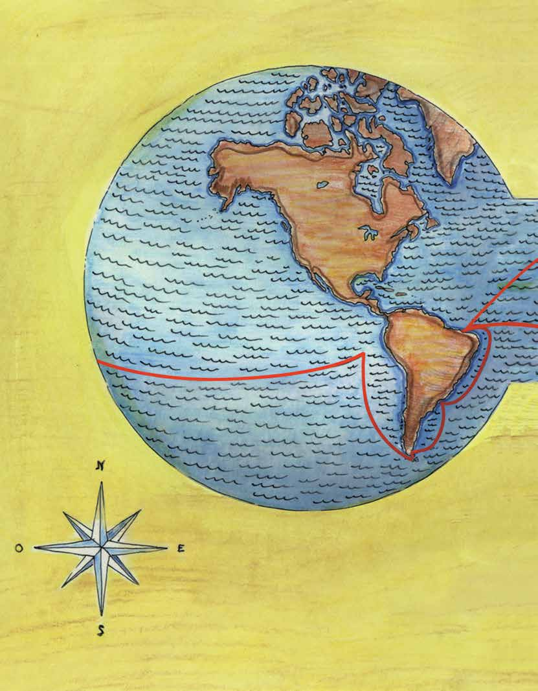
</figure>
<p>Observa el siguiente mapa.</p>
<p>Nuestro planeta, la Tierra</p>
<p>Recorrido que realizó Darwin, entre 1831 y 1836, por las costas de América del Sur y distintos lugares del Océano</p>
<p>Pacífico.</p>
<p>316</p>
<hr>
<p class='muted'>Página 318</p>
<figure>

</figure>
<p>Una mirada al cielo</p>
<div class='callout'>
<p>1.	 Inglaterra</p>
<p>5.	 Tierra de Fuego</p>
<p>9.	 Madagascar</p>
<p>2.	 Brasail</p>
<p>6.	 Galápagos</p>
<p>10.	El Cabo</p>
<p>3.	 Mar del Plata</p>
<p>7.	 Nueva Zelanda</p>
<p>11.	Asunción</p>
<p>4.	 Malvinas</p>
<p>8.	 Tasmania</p>
<p>12	 Inglaterra</p>
</div>
<p>¿Qué actividades crees que realizó Darwin durante este viaje para</p>
<p>estudiar las especies?</p>
<p>317</p>
<hr>
<p class='muted'>Página 319</p>
<p>Fíjate en el ejemplo y anota otras tres actividades en el orden que</p>
<p>consideres conveniente.</p>
<p>Nuestro planeta, la Tierra</p>
<p>Ordenó y clasificó las especies animales y vegetales</p>
<ul>
<li>1. </li>
</ul>
<p>que encontró.</p>
<p></p>
<ul>
<li>2. </li>
</ul>
<p></p>
<ul>
<li>3. </li>
</ul>
<p></p>
<ul>
<li>4. </li>
</ul>
<p></p>
<p>¿Para qué crees que le sirvió a Darwin la gran cantidad de información</p>
<p>que recogió acerca de las plantas y animales que encontró en territorios</p>
<p>tan diferentes?</p>
<p> </p>
<p>A partir del desarrollo de las actividades realizadas, revisa nuevamente tu</p>
<p>primera opinión en relación con el origen de la vida y compleméntala si lo</p>
<p>consideras necesario.</p>
<p>Una de las conclusiones de Darwin fue que los organismos que están</p>
<p>mejor adaptados a su medio tienen más posibilidades de sobrevivir y</p>
<p>tener descendencia. Las generaciones descendientes de una especie</p>
<p>cambian en respuesta a cambios azarosos, que serán seleccionados o</p>
<p>desechados por las condiciones del entorno.</p>
<p>318</p>
<hr>
<p class='muted'>Página 320</p>
<p>ecordemos que...</p>
<p>Una mirada al cielo</p>
<p>Existen distintas formas de explicar el origen de la vida. Estas formas</p>
<p>de explicación surgen en distintos momentos de la historia de los seres</p>
<p>humanos que, preocupados e interesados por comprender su origen y su</p>
<p>presencia en el mundo, han formulado diferentes respuestas. Esas ideas están</p>
<p>relacionadas con el pensamiento religioso de los pueblos, con la observación</p>
<p>e interpretación de lo que sucede en el entorno y con la capacidad y esfuerzo</p>
<p>de algunas personas en el estudio de la naturaleza.</p>
<p>La vida en sus inicios</p>
<p>¿Te imaginas cómo eran los primeros organismos vivos que habitaron la</p>
<p>Tierra?</p>
<p>Completa la siguiente ilustración. Une los puntos siguiendo la numeración</p>
<p>y descubrirás cómo eran algunos de ellos.</p>
<figure>

</figure>
<p>Algunas de las primeras formas de vida.</p>
<p>319</p>
<hr>
<p class='muted'>Página 321</p>
<p>Señala tres características de los organismos que aparecieron.</p>
<p>Nuestro planeta,</p>
<ul>
<li>1. </li>
</ul>
<p>la Tierra</p>
<ul>
<li>2. </li>
<li>3. </li>
</ul>
<div class='callout'>
<p>Lee las siguientes preguntas y respóndelas en tu cuaderno.</p>
<p>¿Cuáles de esos animales existen en la actualidad?</p>
<p>¿Por qué crees que hayan cambiado las plantas y animales, tanto</p>
<p>en sus características como en la cantidad y diversidad de ellos?</p>
</div>
<p>Observa las siguientes ilustraciones.</p>
<figure>

</figure>
<figure>

</figure>
<figure>

</figure>
<figure>

</figure>
<p>320</p>
<hr>
<p class='muted'>Página 322</p>
<p>¿Qué diferencias observas entre las plantas y animales de las ilustraciones</p>
<p>Una mirada al cielo</p>
<p>Escribe tres.</p>
<p>  </p>
<p>Anota el número de la ilustración correspondiente a cada uno de los</p>
<p>textos siguientes:</p>
<div class='callout'>
<p>Esta época inició hace 4 000 millones de años, cuando la Tierra comenzó a</p>
<p>enfriarse. En este periodo surgen las primeras formas de vida, animales de</p>
<p>una sola célula y otros pluricelulares o de más células. Las primeras formas</p>
<p>de vida aparecieron hace aproximadamente 3 600 millones de años.</p>
</div>
<p>Ilustración número</p>
<div class='callout'>
<p>En esta época, que inicia hace unos 220 millones de años y termina hace 65</p>
<p>millones de años, surge una mayor cantidad de plantas y existe buen clima</p>
<p>y mayor alimento. Evolucionan muchos y más grandes grupos de reptiles,</p>
<p>entre ellos, los dinosaurios. Había dinosaurios que se alimentaban de plantas</p>
<p>y otros de la carne de otros animales. Algunos vivían en el agua, otros en</p>
<p>la tierra y unos más volaban. Al final de esta época se extinguieron los</p>
<p>dinosaurios. Algunos de los reptiles que sobrevivieron son los cocodrilos,</p>
<p>serpientes, lagartijas, iguanas y tortugas.</p>
</div>
<p>Ilustración número</p>
<div class='callout'>
<p>Los organismos empiezan a evolucionar y comienzan a formarse grupos</p>
<p>nuevos. Aparecen animales de cuerpo blando, como las esponjas,</p>
</div>
<p>321</p>
<hr>
<p class='muted'>Página 323</p>
<div class='callout'>
<p>los caracoles sin concha y las medusas. Surgen animales cubiertos con</p>
<p>placas duras, como las almejas, que dan origen a peces con esca-</p>
<p>mas, mandíbulas y dientes. También aparecieron plantas y algas marinas;</p>
<p>millones de años después lo harían las plantas en la Tierra. Surgieron</p>
<p>los insectos y algunos animales abandonaron el agua. Los peces más</p>
<p>fuertes evolucionaron y dieron lugar a los anfibios, como los sapos,</p>
<p>las ranas y los ajolotes, animales que pueden permanecer debajo del</p>
<p>agua y fuera de ella porque tienen pulmones.</p>
</div>
<p>Nuestro planeta, la Tierra</p>
<p>Ilustración número</p>
<div class='callout'>
<p>Se desarrollan los mamíferos tanto en el medio acuático, ballenas y</p>
<p>delfines, como en el terrestre; los tigres que comían carne, los caballos</p>
<p>que se alimentaban de plantas. Las aves y los insectos se diversificaron.</p>
<p>También surgen los monos o primates, como los gorilas, los chimpancés</p>
<p>y los perezosos. Se piensa que los monos fueron evolucionando hasta</p>
<p>convertirse en los primeros seres humanos.</p>
</div>
<p>Ilustración número</p>
<div class='callout'>
<p>La mayoría de los científicos está de acuerdo en que hace 65 millones</p>
<p>de años un asteroide gigantesco que viajaba por el espacio cien</p>
<p>veces más rápido que una bala, golpeó la Tierra y provocó una explosión</p>
<p>con una fuerza de millones de toneladas de dinamita. Ésta arrojó polvo</p>
<p>y gases a la atmósfera que ocultaron la luz solar por semanas o meses,</p>
<p>enfriando el planeta, provocando incendios y lluvia ácida. Muchas plantas</p>
<p>y animales, incluidos los dinosaurios, se extinguieron. Se cree que el sitio</p>
<p>donde ocurrió el impacto fue Chicxulub, un lugar situado en la península</p>
<p>de Yucatán, México.</p>
</div>
<p>ara</p>
<p>Consulta en tu Revista el texto “Evolución en la Tierra”.</p>
<p>saber más...</p>
<p>322</p>
<hr>
<p class='muted'>Página 324</p>
<div class='callout'>
<p>Escribe en tu cuaderno las ideas que consideres más importantes del</p>
<p>texto de la Revista y coméntalas con los compañeros del Círculo de</p>
<p>estudio.</p>
</div>
<p>Una mirada al cielo</p>
<p>Lee las siguientes noticias.</p>
<figure>

</figure>
<p>pas explicaron que vivieron en</p>
<p>Tuxtla Gutiérrez, Chiapas. 21 de los mares y convivieron con los</p>
<p>julio de 1998.</p>
<p>dinosaurios. Entre los fósiles se encontraron restos de una tor-</p>
<p>Este día fueron encontrados res- tuga gigante que llegó a medir</p>
<p>tos fósiles de cangrejos y tortugas 5 metros de largo. Su descubri-</p>
<p>que vivieron hace 65 millones de miento ayudará a comprender años, éstos se encontraban entre</p>
<p>por qué se extinguieron estas tor- rocas. Investigadores del Institu-</p>
<p>tugas en ese tiempo.</p>
<p>to de Historia Natural de Chia-</p>
<figure>
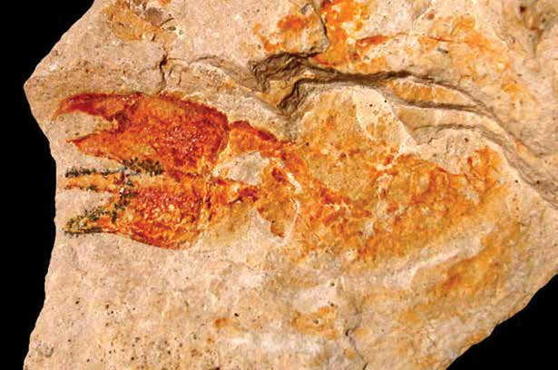
</figure>
<p>Dhzanette, Wikimedia Commons.</p>
<p>323</p>
<hr>
<p class='muted'>Página 325</p>
<div class='callout'>
<p>Los científicos dijeron que se</p>
<p>Argentina, mayo de 1999.</p>
<p>encontraban restos de dientes,</p>
<p>cráneos, huesos de patas y otras</p>
<p>Un grupo de científicos argen-</p>
<p>partes del cuerpo de cuatro ani-</p>
<p>tinos y canadienses descubrió</p>
<p>males; uno de ellos llegó a pesar</p>
<p>fósiles de dinosaurios carnívoros</p>
<p>unos 8 000 kilos y su cabeza me-</p>
<p>que vivieron hace 90 millones de</p>
<p>diría alrededor de 1.80 metros.</p>
<p>años en una región de Argentina.</p>
<p>Mapusaurus roseae</p>
</div>
<p>Nuestro planeta, la Tierra</p>
<figure>
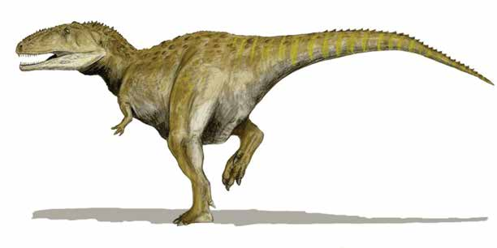
</figure>
<p>¿Qué procedimientos crees que realizaron las personas que describen</p>
<p>las noticias para hacer los descubrimientos? Anota tres de ellos.</p>
<ul>
<li>1. </li>
<li>2. </li>
<li>3. </li>
</ul>
<div class='callout'>
<p>En qué se benefician las personas con la información que se obtiene</p>
<p>de los descubrimientos de fósiles? Escribe tu respuesta en tu cua-</p>
<p>derno.</p>
</div>
<p>324</p>
<hr>
<p class='muted'>Página 326</p>
<p>La palabra fósil proviene del latín, idioma que hablaban los antiguos</p>
<p>romanos; deriva de una palabra cuyo significado era “excavar”. Este</p>
<p>Una mirada al cielo</p>
<p>término se ha utilizado desde hace mucho tiempo para nombrar los restos</p>
<p>o huellas de organismos que se encuentran en las capas de la Tierra y</p>
<p>que se ponen al descubierto excavando.</p>
<div class='callout'>
<p>Comenta con compañeros del Círculo de estudio la siguiente pregun-</p>
<p>ta: qué importancia tiene para los seres humanos el descubrimiento</p>
<p>de fósiles? Anota en tu cuaderno los comentarios que te parezcan</p>
<p>más importantes.</p>
</div>
<p>Los fósiles permiten, en general, conocer la historia de la vida sobre la</p>
<p>Tierra, reconocer las condiciones ambientales que existieron en el pasado</p>
<p>y, en muchos casos, calcular, con cierta exactitud, la edad de las rocas y</p>
<p>capas que componen la corteza terrestre.</p>
<p>La evolución del ser humano</p>
<figure>
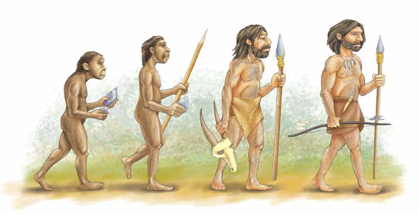
</figure>
<p>Observa la siguiente ilustración.</p>
<p>325</p>
<hr>
<p class='muted'>Página 327</p>
<p>Describe los cambios que fue presentando el cuerpo y los rasgos de la</p>
<p>cara, desde el primero de sus antepasados hasta la forma actual de los</p>
<p>Nuestro planeta, seres humanos. Fíjate en el ejemplo.</p>
<p>la Tierra</p>
<p>La posición del cuerpo se fue haciendo más derecha,  los dedos de las manos se fueron haciendo más cortos...</p>
<p>   </p>
<p>Describe cómo te imaginas que fue cambiando también su forma de vida.</p>
<p>    ara</p>
<p>Consulta en tu Revista el texto “Nuestros antepasados”.</p>
<p>saber más...</p>
<p>¿Qué otros cambios crees que han ocurrido en la Tierra desde su</p>
<p>formación?</p>
<p>¿Siempre ha tenido la misma forma la superficie de la Tierra?</p>
<div class='callout'>
<p>Intercambia opiniones con otros integrantes del Círculo de estudio y</p>
<p>anota en tu cuaderno de trabajo tres de esos cambios.</p>
</div>
<p>326</p>
<hr>
<p class='muted'>Página 328</p>
<figure>

</figure>
<div class='callout'>
<p>Luis Miguel Bugallo Sánchez. Este archivo está autorizado bajo la</p>
</div>
<p>Desde su formación, la Tierra ha tenido grandes cambios. Las ideas que explican</p>
<p>Una mirada al cielo la evolución de la Tierra suponen que de los primeros organismos —los</p>
<p>microbios y las algas— se derivó una variedad de especies que</p>
<p>fueron evolucionando a lo largo de la historia de la Tierra, sobreviviendo los más capaces</p>
<p>de adaptarse a las condiciones de un medio cambiante.</p>
<p>Esta explicación supone también que los seres humanos formamos</p>
<p>parte de la evolución de la especie animal y que tuvieron que darse algunos</p>
<p>cambios en nuestros antepasados, los monos, para ser como somos hoy. La forma actual de la</p>
<p>Tierra es resultado de un lento movimiento de su corteza, que dio lugar a</p>
<p>la creación de regiones diversas en climas y en formas de vida.</p>
<div class='callout'>
<p>Lee las siguientes preguntas y respóndelas en tu cuaderno.</p>
</div>
<p>¿Qué ha hecho posible que los seres humanos reúnan información</p>
<p>de la evolución de la Tierra y de los organismos que habitan en ella?</p>
<p>Si tuvieras que dejar alguna huella de tu presencia en la Tierra, ¿qué</p>
<p>dejarías y por qué?</p>
<p>327</p>
<hr>
<p class='muted'>Página 329</p>
<h3>Avances de la humanidad</h3>
<p>Nuestro planeta, la Tierra</p>
<figure>
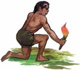
</figure>
<figure>
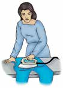
</figure>
<figure>
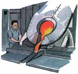
</figure>
<figure>

</figure>
<figure>
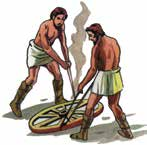
</figure>
<figure>

</figure>
<figure>
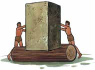
</figure>
<figure>

</figure>
<figure>
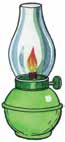
</figure>
<figure>

</figure>
<figure>
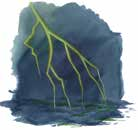
</figure>
<figure>

</figure>
<figure>

</figure>
<figure>

</figure>
<figure>

</figure>
<figure>

</figure>
<figure>
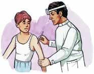
</figure>
<figure>
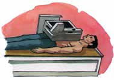
</figure>
<p>328</p>
<hr>
<p class='muted'>Página 330</p>
<div class='callout'>
<p>Escribe en tu cuaderno cuál de los descubrimientos representados en</p>
<p>la ilustración te parece más importante y por qué.</p>
</div>
<p>Una mirada al cielo</p>
<p>En la historia de la humanidad, tanto en el pasado como en la actualidad,</p>
<p>se pueden reconocer logros y conquistas importantes alcanzados por los</p>
<p>seres humanos, como individuos y como grupos sociales.</p>
<p>Revisemos algunos de ellos.</p>
<p>Los sumerios, pueblo que habitaba en una región de Mesopotamia, inven-</p>
<p>taron la escritura, la rueda y la edificación de ciudades 3 000 años a. C.</p>
<p>Thomas Edison (1847-1931) ha sido considerado uno de los inventores</p>
<p>más productivos de todos los tiempos; inventó la bombilla eléctrica, la</p>
<p>lámpara incandescente, el fonógrafo y otros 1 300 inventos más.</p>
<p>Investigadores de Alemania y Dinamarca han creado una abeja robot</p>
<p>para comunicarse con las abejas reales, que se comunican entre sí por</p>
<p>medio de una mezcla de canto y danza. La abeja robot, que está hecha</p>
<p>de latón recubierto de cera de abeja y las alas de un trozo de una navaja</p>
<p>para afeitar, puede mover las alas y reproducir el ruido que hacen las</p>
<p>abejas. Ya se ha experimentado con este invento y las abejas siguieron a</p>
<p>la abeja robot hasta 1 km de distancia.</p>
<div class='callout'>
<p>Investiga y escribe en tu cuaderno una lista de inventos o acciones</p>
<p>producidas por el ser humano que representen avances para la hu-</p>
<p>manidad.</p>
</div>
<p>Encontramos una gran cantidad de inventos a lo largo de la historia de</p>
<p>la humanidad. Una de las principales aportaciones de todos ellos es que</p>
<p>han hecho posible la creación de nuevos inventos.</p>
<p>329</p>
<hr>
<p class='muted'>Página 331</p>
<p>Los actos y las intenciones de las personas y de los grupos sociales no</p>
<p>siempre contribuyen a crear condiciones de paz y bienestar. En ocasiones,</p>
<p>Nuestro planeta,</p>
<p>los avances de la ciencia y de la tecnología se emplean irresponsablemente</p>
<p>la Tierra con fines destructivos.</p>
<p>Haz una lista en tu cuaderno de hechos y acciones que propician daño</p>
<p>a la integridad de las personas, a la de otros seres vivos y a la del</p>
<p>planeta en su conjunto y que parecerían negar la evolución de la especie</p>
<p>humana. Fíjate en el ejemplo.</p>
<p>Las guerras entre países, la tala incontrolable de los  bosques, la contaminación de ríos y mares, los odios</p>
<p> raciales, la violencia y el narcotráfico.</p>
<p></p>
<div class='callout'>
<p>Comenten la siguiente pregunta: qué podríamos hacer cada uno de</p>
<p>nosotros para contribuir a superar los obstáculos que nos impiden</p>
<p>ser cada vez mejores?</p>
</div>
<p>ecordemos que...</p>
<p>Reflexionar acerca del origen de la vida y de las diferentes explicaciones acerca</p>
<p>de éste nos permite ampliar nuestra comprensión del mundo. De igual forma,</p>
<p>el conocimiento de las formas en que la vida terrestre evolucionó nos facilita la</p>
<p>comprensión de las características de los distintos organismos vivos que existen</p>
<p>en la actualidad. Los seres humanos nos caracterizamos por tener una actitud</p>
<p>de búsqueda permanente. Nuestros antepasados nos heredaron el interés por</p>
<p>tener respuestas, cada vez más satisfactorias, a preguntas que la humanidad</p>
<p>se ha hecho desde hace miles de años. La evolución, biológica y social de la</p>
<p>humanidad nos hace actuar con decisión para conquistar nuevos conocimientos</p>
<p>y explicaciones más amplias del mundo del que formamos parte.</p>
<p>330</p>
<hr>
<p class='muted'>Página 332</p>
<p>3	 Estaciones, eclipses y mareas</p>
<p>Tema</p>
<p>Una mirada al cielo</p>
<div class='callout'>
<p>Los movimientos de la Tierra, así como los de algunos cuerpos</p>
<p>celestes, provocan cambios en el planeta; estos cambios, a la vez, influyen</p>
<p>en sus habitantes.</p>
</div>
<p>ara empezar...</p>
<p>¿Cuántas épocas o estaciones del año conoces? Anótalas.</p>
<p> </p>
<div class='callout'>
<p>En algunos lugares existen características que diferencian a las</p>
<p>estaciones del año. En grupo, mencionen las que conozcan. Después,</p>
<p>escribe algunas de ellas. Fíjate en el ejemplo.</p>
</div>
<p>Estación:</p>
<p>Estación:</p>
<p>Invierno  </p>
<p>El clima es muy frío.</p>
<p>     </p>
<p>Estación:</p>
<p>Estación:</p>
<p>        331</p>
<hr>
<p class='muted'>Página 333</p>
<div class='callout'>
<p>Durante cada una de las estaciones del año, el estado del tiempo</p>
<p>adquiere características distintas. Describe en tu cuaderno las acti-</p>
<p>vidades que llevas a cabo durante dos de las estaciones del año que</p>
<p>más te gustan, la forma en que te vistes y algunas de las fiestas o</p>
<p>celebraciones tradicionales en esas estaciones.</p>
</div>
<p>Nuestro planeta, la Tierra</p>
<p>¿Por qué ocurren las estaciones? ¿Por qué cambia el tiempo? ¿Qué</p>
<p>tiene que ver el Sol con las estaciones del año? Si consideras necesario</p>
<p>investiga y comenta tus respuestas con otros compañeros</p>
<p>Fenómenos espectaculares</p>
<figure>
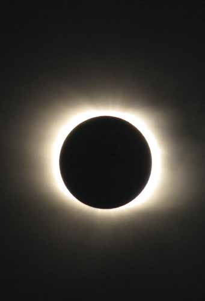
</figure>
<p>en el cielo</p>
<p>Lee el siguiente texto.</p>
<h2>E</h2>
<p>ran como las diez de la mañana; la luz del Sol empezó a perder intensidad, una</p>
<p>sombra comenzó a tapar el Sol, éste ya no picaba en la piel y la temperatura empezó a bajar, el</p>
<p>ambiente lucía como si trajera uno anteojos para el Sol… la gente se veía emocionada, en</p>
<p>un instante parecían las siete de la noche y en lugar del Sol se observaba, a través de los lentes</p>
<p>que nos recomendaron usar, un disco negro rodeado por un anillo de fuego… a los tres o</p>
<p>cuatro minutos, el disco negro empezó a dejar de tapar al Sol, la temperatura se volvió a elevar,</p>
<p>la intensidad de la luz retomó su brillo, fue como un amanecer…</p>
<p>332</p>
<hr>
<p class='muted'>Página 334</p>
<p>¿Qué crees que presenció la persona que hizo la narración anterior?</p>
<p>Una mirada  al cielo </p>
<p>¿Has presenciado un eclipse de Sol o de Luna? Describe tu experiencia.</p>
<p>   </p>
<figure>

</figure>
<p>Lee el siguiente texto.</p>
<p>Algunos pueblos prehispánicos pensaban que cuando había un eclipse, un</p>
<p>jaguar se comía al Sol. Para evitar que dejara de brillar el Sol,</p>
<p>hacían sacrificios.</p>
<p>Los chinos creían que un dragón se comía al Sol y por eso había eclipses. Para</p>
<p>que el dragón soltara al Sol y se alejara asustado, hacían mucho ruido con cacerolas</p>
<p>y cohetes.</p>
<p>Algunos pueblos antiguos interpretaban a los eclipses como presagios de guerra. El día 10 técpatl</p>
<p>del calendario azteca, correspondiente al año de 1476, día en el que hubo un</p>
<p>eclipse, los mexicas destruyeron a los de Ocuitlán.</p>
<p>333</p>
<hr>
<p class='muted'>Página 335</p>
<p>¿Qué es lo que realmente pasa cuando ocurre un eclipse?</p>
<p>Nuestro  planeta, la Tierra   </p>
<div class='callout'>
<p>Pregunta a los vecinos cómo creen que ocurren los eclipses y qué</p>
<p>influencia tienen en las personas y en los animales. Anota los resul-</p>
<p>tados de tu consulta en tu cuaderno y escribe tu propia explicación.</p>
</div>
<p>Observa la siguiente ilustración y lee el texto.</p>
<p>Un eclipse es un fenómeno natural que se produce cuando un cuerpo celeste</p>
<p>oculta a otro y la sombra que se provoca se proyecta en un tercer cuerpo.</p>
<p>Observar directamente un eclipse de Sol causa quemaduras en los ojos, pero</p>
<p>no causa ningún otro mal, como muchas personas piensan.</p>
<figure>

</figure>
<p>Penumbra</p>
<p>Sol</p>
<p>Luna</p>
<p>Tierra</p>
<p>Sombra 334</p>
<hr>
<p class='muted'>Página 336</p>
<p>ara</p>
<p>Consulta en tu Revista el texto “Los eclipses”.</p>
<p>saber</p>
<p>Una mirada al cielo más...</p>
<p>Con la información de la Revista, contesta las siguientes preguntas en tu</p>
<p>cuaderno.</p>
<p>¿Qué pasaría con la sombra que propicia un eclipse de Sol si la Luna</p>
<p>fuera más grande que la Tierra?</p>
<p>¿En cuántas regiones o lugares de la Tierra se podría observar el eclipse</p>
<p>en forma total, si ésta no tuviera movimiento de rotación?</p>
<p>¿Qué pasaría en un eclipse de Luna si la Tierra fuera del mismo tamaño</p>
<p>que ese satélite?</p>
<p>¿Qué tipo de explicación darías a las personas que demuestren temor o</p>
<p>preocupación ante un eclipse?</p>
<p>Anota en las líneas el tipo de eclipse al que se refiere cada texto:</p>
<figure>
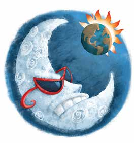
</figure>
<figure>

</figure>
<p>La blanca Luna no se bronceó porque</p>
<p>La Luna se convirtió en un fiero jaguar la Tierra se lo impidió.</p>
<p>y de pura envidia te comenzó a devorar.</p>
<p>  335</p>
<hr>
<p class='muted'>Página 337</p>
<p>Desastres naturales y no tan naturales</p>
<p>Nuestro planeta, la Tierra</p>
<p>Encuentra los nombres de cuatro desastres que ocurren en la naturaleza,</p>
<p>Fíjate en el ejemplo.</p>
<div class='callout'>
<p>A</p>
<p>L</p>
<p>E</p>
<p>V</p>
<p>O</p>
<p>S</p>
<p>O</p>
<p>M</p>
<p>L</p>
<p>P</p>
<p>T</p>
<p>I</p>
<p>M</p>
<p>O</p>
<p>R</p>
<p>A</p>
<p>T</p>
<p>O</p>
<p>I</p>
<p>L</p>
<p>A</p>
<p>N</p>
<p>E</p>
<p>H</p>
<p>A</p>
<p>G</p>
<p>I</p>
<p>R</p>
<p>T</p>
<p>A</p>
<p>N</p>
<p>C</p>
<p>F</p>
<p>U</p>
<p>S</p>
<p>J</p>
<p>L</p>
<p>E</p>
<p>R</p>
<p>N</p>
<p>T</p>
<p>E</p>
<p>R</p>
<p>R</p>
<p>E</p>
<p>M</p>
<p>O</p>
<p>T</p>
<p>O</p>
<p>E</p>
<p>I</p>
<p>N</p>
<p>P</p>
<p>A</p>
<p>Q</p>
<p>A</p>
<p>N</p>
<p>I</p>
<p>E</p>
<p>T</p>
<p>O</p>
<p>D</p>
<p>C</p>
<p>C</p>
<p>U</p>
<p>R</p>
<p>I</p>
<p>T</p>
<p>P</p>
<p>A</p>
<p>L</p>
<p>I</p>
<p>R</p>
<p>A</p>
<p>I</p>
<p>D</p>
<p>A</p>
<p>O</p>
<p>R</p>
<p>L</p>
<p>J</p>
<p>O</p>
<p>R</p>
<p>N</p>
<p>A</p>
<p>D</p>
<p>D</p>
<p>T</p>
<p>U</p>
<p>U</p>
<p>I</p>
<p>N</p>
<p>U</p>
<p>N</p>
<p>D</p>
<p>A</p>
<p>C</p>
<p>I</p>
<p>O</p>
<p>N</p>
<p>A</p>
<p>T</p>
<p>M</p>
<p>O</p>
<p>S</p>
<p>F</p>
<p>E</p>
<p>R</p>
<p>A</p>
<p>A</p>
</div>
<div class='callout'>
<p>Comenta con otros integrantes del Círculo de estudio si alguno o</p>
<p>algunos han experimentado un desastre natural y cómo lo vivieron.</p>
</div>
<p>336</p>
<hr>
<p class='muted'>Página 338</p>
<p>Lee y comenta con tus compañeros los siguientes textos.</p>
<p>Una mirada al cielo</p>
<div class='callout'>
<p>Septiembre de 1985, Ciudad de México. Sismo: 4 287 muertos y 37 300</p>
<p>damnificados.</p>
<p>Octubre de 1997, Oaxaca y Guerrero. Huracán: 200 muertos y 4 000</p>
<p>damnificados.</p>
<p>Septiembre de 1909, Nuevo León. Inundación: 2 000 personas ahogadas.</p>
</div>
<div class='callout'>
<p>Intercambien opiniones y comentarios en relación con los textos y</p>
<p>comenten las siguientes preguntas.</p>
</div>
<p>¿Cómo afectan a los seres humanos esos hechos?</p>
<p>¿Hasta dónde podemos intervenir las personas para disminuir sus efectos?</p>
<p>El Centro Nacional de Prevención de Desastres (cenapred) registró</p>
<p>97 fenómenos considerados como destructivos por causar la muerte</p>
<p>de más de 100 personas, ocurridos entre 1900 y 1999: sismos,</p>
<p>huracanes, maremotos, incendios forestales, inundaciones y erupciones</p>
<p>de volcanes, entre otros.</p>
<figure>
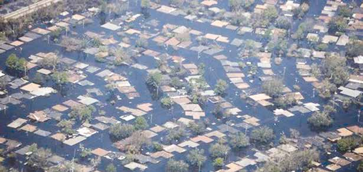
</figure>
<p>Kyle Andrew Brown, Wikimedia Commons.</p>
<p>337</p>
<hr>
<p class='muted'>Página 339</p>
<p>Sismos</p>
<p>Nuestro planeta,</p>
<p>Lee la siguiente nota periodística.</p>
<p>la Tierra</p>
<figure>

</figure>
<figure>

</figure>
<h3>Se registran</h3>
<h3>sismos en</h3>
<h3>Ciudad de</h3>
<h3>México,</h3>
<h3>Acapulco</h3>
<h3>y otros estados</h3>
<p>Acapulco, Gro.</p>
<p>Autoridades de Protección Civil en la zona de Valles Centrales se</p>
<p>de Guerrero informaron que al- sintieron con mayor intensidad.</p>
<p>gunas viviendas resultaron afec-</p>
<p>Mientras que en Tlaxcala se dijo tadas por los sismos registrados</p>
<p>que los sismos no ocasionaron esta madrugada, mientras que en</p>
<p>afectaciones materiales ni huma- otros estados no se reportaron</p>
<p>nas, aunque de forma preventiva daños materiales ni víctimas. La</p>
<p>se realiza un monitoreo en los 60</p>
<p>Unidad Estatal de Protección Ci- municipios del estado.</p>
<p>vil de Guerrero señaló que lleva</p>
<p>En el Distrito Federal, 14 familias a cabo recorridos de revisión en</p>
<p>fueron desalojadas esta madruga- municipios de la Costa Grande</p>
<p>da de un edificio en la delegación ya que en esa zona tuvo su epi-</p>
<p>Benito Juárez, presuntamente afec- centro el temblor de 6.3 grados</p>
<p>tado por los sismos de la madru-</p>
<p>Richter.</p>
<p>gada de este viernes. Personal de la</p>
<p>Autoridades de Protección Ci-</p>
<p>Dirección de Protección Civil de vil de Oaxaca reportaron que por</p>
<p>la delegación Benito Juárez pro- estos movimientos telúricos no</p>
<p>cedieron a la evacuación de las se registraron afectaciones, y sólo</p>
<p>familias.</p>
<p>338</p>
<hr>
<p class='muted'>Página 340</p>
<div class='callout'>
<p>Con tus compañeros, contesta la siguiente pregunta.</p>
</div>
<p>Una mirada al cielo</p>
<p>Si el centro del temblor o epicentro fue en Acapulco,</p>
<p>¿por qué también se sintió en otros estados cercanos?</p>
<p>   </p>
<p>Los sismos suceden por movimientos de la corteza terrestre. La corteza</p>
<p>superficial de la Tierra está dividida en una serie de placas, algo parecido</p>
<p>a un rompecabezas. Éstas pueden chocar y provocar sismos que se</p>
<p>propagan en ondas, desde el lugar de origen denominado epicentro</p>
<p>hasta donde lleguen las ondas, causando un temblor o sismo.</p>
<p>Durante 1999, uno de los desastres que más afectó a estados del</p>
<p>centro y sur del país fue el de las inundaciones. Éstas fueron causadas</p>
<p>por lluvias continuas que disminuyeron la capacidad de absorción del</p>
<p>suelo. Algunas de las consecuencias de este tipo de desastre fueron la</p>
<p>pérdida de vidas humanas, animales, cosechas, otros bienes materiales</p>
<p>y graves daños en extensas áreas dedicadas al cultivo. Otra causa</p>
<p>importante de las inundaciones son los huracanes o ciclones que son</p>
<p>tormentas tropicales con vientos que pueden alcanzar velocidades</p>
<p>mayores a 118 km/h.</p>
<p>¿Qué podemos hacer ante estos fenómenos?</p>
<p>Una experta en desastres dice que: “Los terremotos, erupciones volcánicas</p>
<p>y tifones no pueden ser previstos, pero sí se pueden tomar algunas</p>
<p>medidas para antes y después del desastre”.</p>
<p>339</p>
<hr>
<p class='muted'>Página 341</p>
<div class='callout'>
<p>En grupo opinen sobre el testimonio anterior. Después, digan qué</p>
<p>medidas de prevención conocen.</p>
</div>
<p>Nuestro planeta, la Tierra abías que...</p>
<p>Los perros aúllan, los pandas gimen y el agua de los pozos burbujea antes de</p>
<p>un terremoto.</p>
<p>Los riesgos y peligros de algunos fenómenos naturales se convierten en</p>
<p>desastres si ocurren donde vive gente. Por desgracia, la población, motivada</p>
<p>por distintas razones, como la desinformación, la falta de prevención, la pobreza,</p>
<p>el crecimiento demográfico, la migración en busca de fuentes de trabajo, la</p>
<p>falta de planeación, entre otras, se ubica en lugares de riesgo. En muchas</p>
<p>ocasiones, las consecuencias de los desastres se deben a errores humanos.</p>
<p>Lee los siguientes ejemplos.</p>
<figure>
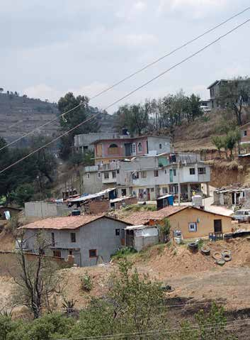
</figure>
<h2>E</h2>
<p>n la ciudad de México viven casi 20 millones de personas, a pesar de</p>
<p>ser una zona sísmica y volcánica. Existen, además, miles de familias asentadas en</p>
<p>barrancas y zonas de minas.</p>
<p>En el Sur y el Oeste de los Estados</p>
<p>Unidos de Norteamérica se presentan con frecuencia sequías, incendios, huracanes</p>
<p>y terremotos, sin embargo, en los próxi- mos años se espera, un crecimiento de la</p>
<p>población de entre 30 y 50% de la actual de estas zonas.</p>
<p>340</p>
<hr>
<p class='muted'>Página 342</p>
<div class='callout'>
<p>Existe irresponsabilidad de las personas al ubicarse en zonas de</p>
<p>riesgo? Por qué se propician estos riesgos?</p>
<p>Discutan e intercambien comentarios acerca de los ejemplos</p>
<p>anteriores.</p>
</div>
<p>Una mirada al cielo abías que...</p>
<figure>

</figure>
<p>Las erupciones volcánicas provocan grandes</p>
<p>R.E. Wilcox, U.S. Geological Survey, Wikimedia Commons.</p>
<p>desastres en los lugares donde se localizan; cuando se dan estos fenómenos naturales</p>
<p>ocasionan cambios en el paisaje y modifican la forma de vida de los seres vivos que habitan</p>
<p>cerca. Un ejemplo de erupción que transformó la forma de vivir de las comunidades de</p>
<p>los alrededores fue el volcán Paricutín, en</p>
<p>Michoacán, que comenzó a surgir el 20 de febrero de 1943; uno de los pueblos</p>
<p>más dañados fue Parangaricutiro.</p>
<p>Se ha declarado al 9 de octubre el Día de la Reducción de Desastres</p>
<p>Naturales.</p>
<p>Lee el siguiente texto.</p>
<figure>

</figure>
<h2>V</h2>
<p>arios países donaron 40 millones de dólares a Guatemala, para apoyar los esfuerzos de</p>
<p>reconstrucción tras los daños ocasionados por el huracán Mitch, durante el mes de octubre de</p>
<p>1998, que dejó 9 000 muertos. El donativo será utilizado para fortalecer la producción agrícola</p>
<p>y diseñar programas para prevenir desastres y luchar contra epidemias.</p>
<p>341</p>
<hr>
<p class='muted'>Página 343</p>
<div class='callout'>
<p>Qué opinas de la cooperación entre países para aligerar los efectos</p>
<p>destructivos de los desastres naturales? Escribe tu opinión en tu</p>
<p>cuaderno.</p>
</div>
<p>Nuestro planeta, la Tierra ara saber más...</p>
<p>Consulta en tu Revista el texto “Sociedad y desastres”.</p>
<p>ecordemos que...</p>
<p>Los movimientos y desplazamientos de la Tierra, la Luna y el Sol se combinan</p>
<p>y son causa de algunos cambios que se dan en forma regular en la Tierra.</p>
<p>Las estaciones del año son cambios que se dan de manera cíclica; podemos</p>
<p>esperar que cada cierto tiempo se presenten y prever nuestras actividades.</p>
<p>Otros fenómenos, como los eclipses, simplemente son sucesos que ocurren</p>
<p>eventualmente y que nos recuerdan que existe una cercanía con el Sol y</p>
<p>la Luna, al igual que las mareas, provocadas por la atracción permanente</p>
<p>de estos astros. Finalmente, los desastres son también una consecuencia del</p>
<p>movimiento constante de los componentes del planeta; podemos hacer</p>
<p>muy poco para evitarlos, pero sí podemos prevenirnos y protegernos</p>
<p>para enfrentarlos con mejores defensas y actuar oportunamente una vez</p>
<p>que han ocurrido.</p>
<p>342</p>
</body></html>
